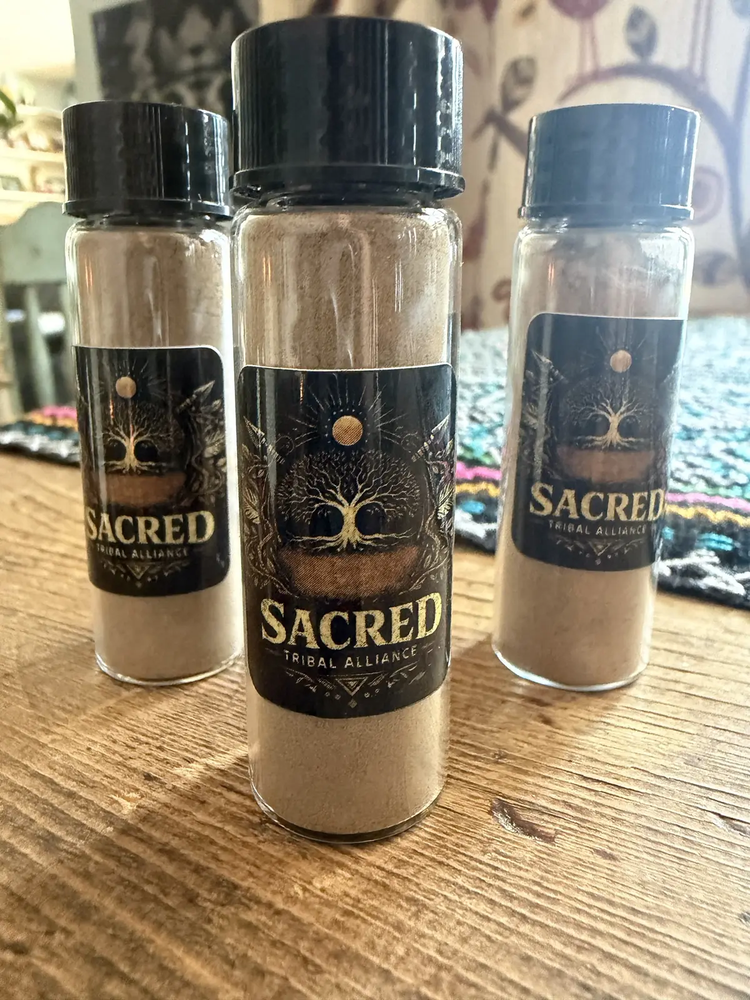
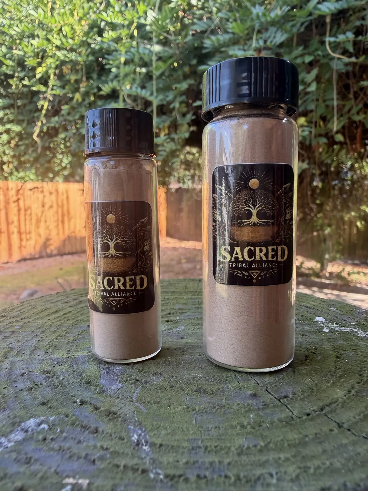

Hapé
A sacred, finely ground powder made from mapacho tobacco and other Amazonian plant materials. Used for centuries in ceremony, prayer, and energetic clearing by indigenous peoples of the Amazon basin.
Hapé (also spelled Rapé, pronounced hah-PAY) is prepared by specialized knowledge-holders within Amazonian communities. The tobacco used is not commercial tobacco — it is mapacho (Nicotiana rustica), a plant with its own tradition of ceremonial use distinct from recreational tobacco products.
Different blends carry different plant materials and are traditionally associated with different intentions — grounding, clarity, prayer, and connection. Each blend in our catalog reflects a specific preparation tradition. We work only with sources that can speak to the origin and preparation of what they offer.


Before you inquire
Hapé contains concentrated mapacho tobacco and is not appropriate for everyone. People with heart conditions, high blood pressure, or tobacco sensitivities should research carefully before considering it. It is not a recreational product. Legal status varies by jurisdiction — it is your responsibility to know the laws where you are. Nothing on this page is medical advice or a recommendation for any individual.
All offerings are available by inquiry only. Reach out via the contact page to start a conversation about sourcing, preparation, and whether a particular blend is a fit for you.